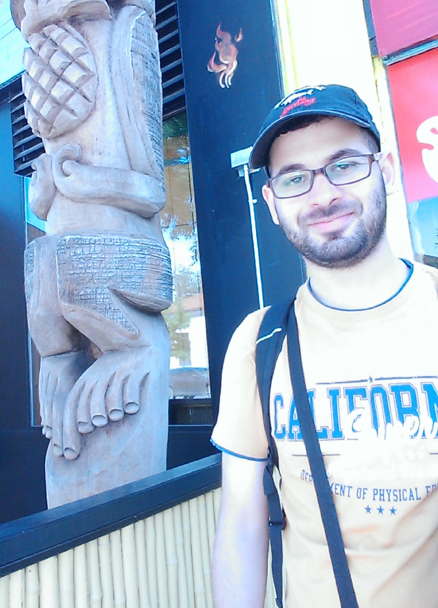

Welcome to my website !
My name is Mohamed El Yafrani, I am a PhD student at Mohammed V university in Rabat, Morocco.
My PhD dissertation focuses on studying multi-component problems with dependencies.
Research interests
- Combinatorial optimisation:
problems with multiple interdependent components,
fitness landscape analysis, modeling,
decomposability in large scale problems
- Metaheuristics and evolutionary computation:
local search and extensions (simulated annealing, tabu search, variable neighborhood search, iterated local search),
genetic and memetic algorithms, genetic programming, EA theory
- Machine learning:
neural networks, probabilistic models, evolutionary machine learning
Research experience
- October 2016: Visiting student, Optimisation and Logistics group, The University of Adelaide, Australia
(Supervisor: Dr. Markus Wagner)
- December 2014: PhD candidate, LRIT, Mohammed V university in Rabat, Morocco
(Supervisor: Pr. Belaïd Ahiod)
Citations
Publications
Journal papers
-
Mohcin Allaoui, Belaïd Ahiod, Mohamed El Yafrani.
"A hybrid crow search algorithm for solving the DNA fragment assembly problem",
Expert Systems with Applications, Elsevier, 2018.
-
Mohamed El Yafrani and Belaïd Ahiod.
"Efficiently Solving the Traveling Thief Problem using Hill Climbing and Simulated Annealing",
Information Sciences, Elsevier, 2017.
Additional material:
Java code for CS2SA
-
Mohamed El Yafrani, Marcella S. R. Martins, Markus Wagner, Belaïd Ahiod, Myriam Delgado, Ricardo Lüders.
"A hyperheuristic approach based on low-level heuristics for the travelling thief problem",
Genetic Programming and Evolvable Machines, Springer, 2017.
Additional material: Read-only link |
MATLAB codes for:
GPHS,
GPHS*, and
GA
-
Mohamed El Yafrani and Belaïd Ahiod.
"A Local Search based Approach for Solving the Travelling Thief Problem: The pros and cons",
Applied Soft Computing, Elsevier, 2016.
Additional material:
Java code for JNB and J2B
Conference papers
-
Marcella Martins, Mohamed El Yafrani, Myriam Delgado, Markus Wagner, Belaïd Ahiod, and Ricardo Lüders.
"HSEDA: A Heuristic Selection Approach Based on Estimation of Distribution Algorithm for the Travelling Thief Problem",
GECCO 2017, Berlin, Germany.
Additional material:
PDF |
code (MATLAB & java)
-
Mohamed El Yafrani, Shelvin Chand, Aneta Neumann, Belaïd Ahiod, and Markus Wagner.
"Multi-objectiveness in the Single-objective Traveling Thief Problem"
GECCO 2017, Berlin, Germany. (poster)
Additional material:
PDF
-
Mohamed El Yafrani and Belaïd Ahiod.
"Population-based vs. Single-solution Heuristics for the Travelling Thief Problem"
GECCO 2016, Denver, CO, USA.
Additional material:
java code |
jar executables + python scripts |
results
-
Mohamed El Yafrani and Belaïd Ahiod.
"Cosolver2B: An Efficient Local Search Heuristic for the Travelling Thief Problem"
AICCSA 2015, Marrakech, Morocco.
Additional material:
java code |
jar executables + python scripts
-
Mohamed El Yafrani and Belaïd Ahiod.
"Étude de Problèmes d'Optimisation Combinatoire à Multiples Composantes Interdépendantes"
LRIT URAC days meeting, Rabat, Morocco.
Teaching and supervision
Teaching assistant
Data structures and advanced C programming (2014/2015, 2015/2016, 2016/2017)
Supervision and co-supervision
I help supervising bachelor and master thesis in different topics:
metaheuristics for bioinformatics problems, puzzle solving, computer networks, and web development
Services
Conference commitee member
Journal reviewer
Grants & Awards
- July 2017: Our solver was ranked 1st (shared prize) during the
TTP 2017 competition
- April 2017: ACM grant to attend the "50 Years of the ACM Turing Award Celebration Conference" in San Francisco, California
- September 2016: IEEE CIS Graduate Student Research Grant
- May 2016: ACM Travel grant to attend GECCO 2016 in Denver, Colorado
- October 2015: QCRI Scholarship to attend AICCSA 2015 in Marrakech, Morocco
Memberships
Contact information
If you are interested in my research, feel free to send me an email at
m.elyafrani@gmail.com
and I will be happy to answer you ASAP!